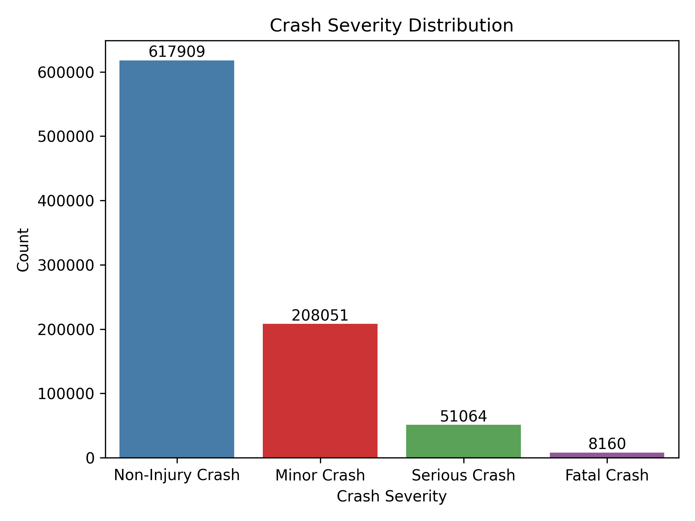
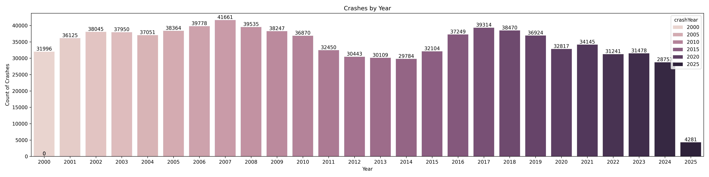
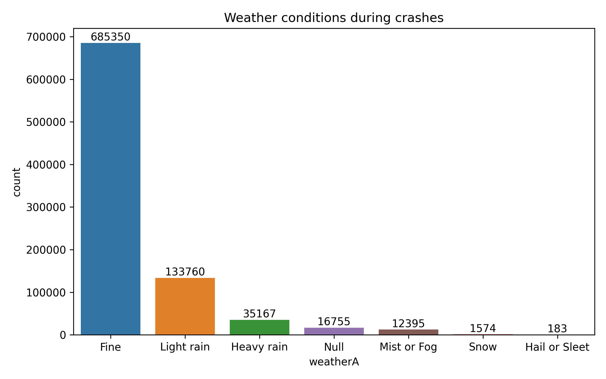
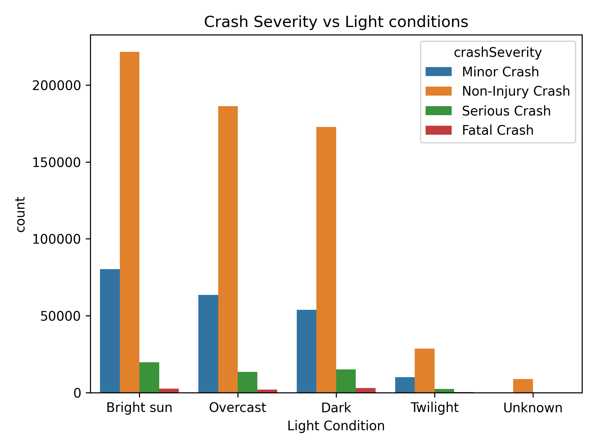
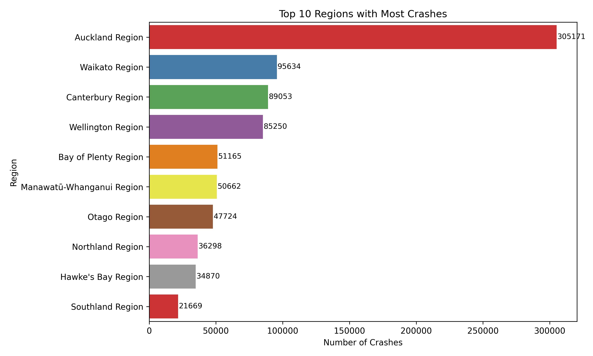
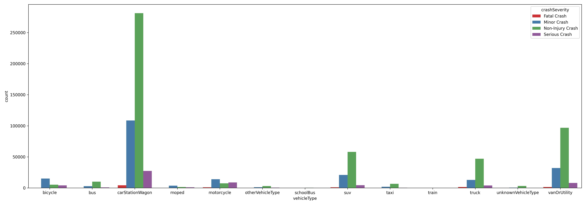
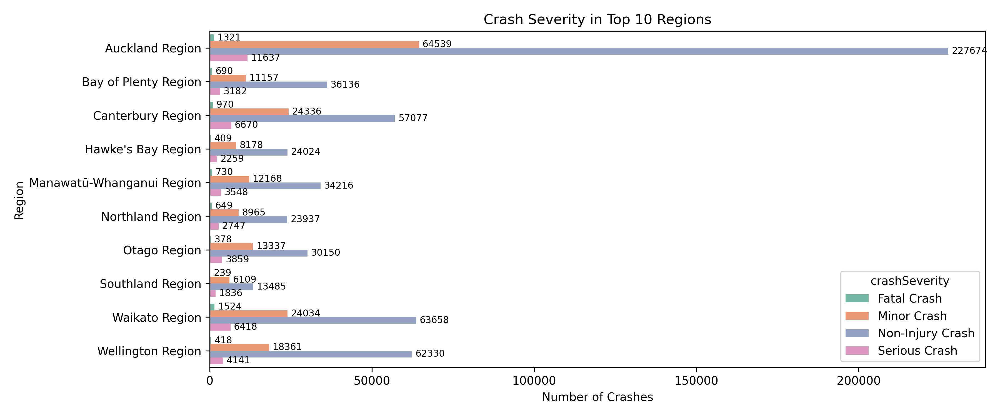
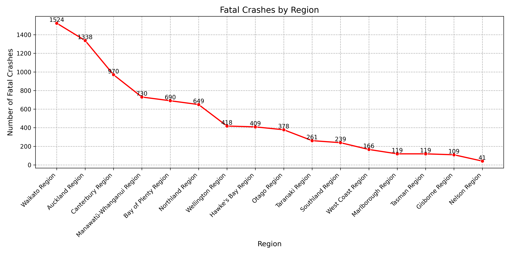

I was on the lookout for a unique project to showcase in my data portfolio — something that is interesting. That’s when I stumbled across the NZTA Open Data Portal. Among the many datasets, the Crash Analysis System caught my eye. The idea of using real-world crash data to uncover patterns and maybe even contribute to road safety conversations felt both important and interesting. So, I downloaded the dataset and decided to see what stories our roads have been telling — using Python, a Jupyter notebook, and a lot of curiosity.
To get started, I downloaded the crash data directly from NZTA’s open data portal.
(https://opendata-nzta.opendata.arcgis.com)
I used the CSV file updated on 7th July 2025, which contains a massive
885,184
records.
The dataset includes a lot of details — everything from the time and location of each crash to
road
conditions, environmental factors, vehicle movements, and more.
Naturally, the first thing I did was load the data into Pandas and run a few quick checks like
.shape, .head(), and .info() just to get a feel for what
I was working
with.
As with most real-world datasets, not all columns were useful for the kind of analysis I had in
mind. Many of
them were IDs, repetitive codes, or too specific (things like OBJECTID,
X,
Y, meshblockId, and so on).
One major advantage of this dataset is the comprehensive field descriptions provided on the NZTA portal, which made it easier to decide which columns to drop.
So, I did a bit of cleanup using df.drop() — narrowing it down to the columns that
could actually
help tell a story. I focused on fields like
crash severity, region, weather conditions,
time of
day, and vehicle movement.
This step is like prepping ingredients before cooking — it makes the rest of the process much smoother.
I started with a simple countplot of crash severity levels. This gave a clear snapshot of how many crashes were minor vs. serious or fatal. Unsurprisingly, non-injury and minor-injury crashes made up the bulk — but the number of fatal crashes was still significant.
Next, I wanted to understand how crash volumes have changed over time — so I plotted the number of crashes per year. This gave a nice visual trend of the highs and lows across the dataset. There is interesting cyclical behaviour. Obviously the 2025 year is incomplete, so we do not take that in account. As you can see, some years like 2007, 2008 and 2017 saw the highest number of crashes, while the numbers have gradually dipped in more recent years — particularly post-2020.
I was curious how much weather actually plays a role in crashes — like, do more crashes really happen when it’s rainy or foggy? So I plotted the data to see what weather conditions were most common during crash events.
Turns out, most crashes actually happened in fine weather — over 685,000 of them! At first that felt counter intuitive, but then I realized most people drive in good weather, so statistically, more crashes are just likely to happen then. Still, there were a substantial number of crashes during light rain (133k) and even heavy rain (35k), which makes sense — wet roads can easily lead to poor control or longer stopping distances.
Less frequent weather types like fog, snow, and hail had much lower counts, but they’re still worth noting. Even though those conditions aren’t common, they clearly still pose risk when they do happen.
Next, I wanted to understand whether light conditions — like daylight vs. darkness — had any noticeable impact on the severity of crashes. So I created a visualization comparing crash severity levels across different lighting conditions (things like bright sun, overcast, dark, twilight, etc.).
Unsurprisingly, the majority of crashes occurred in daylight conditions (either bright sun or overcast), simply because that’s when most people are out on the roads. But what stood out more was the higher proportion of serious and fatal crashes in darker conditions. Even though fewer people drive at night or during twilight, those crashes tended to be more severe — possibly due to reduced visibility or slower reaction times.
There was also a small chunk of data where light conditions were marked as "Unknown." While it’s a tiny portion, it’s another reminder that real-world datasets often come with a few gaps or inconsistencies.
To get a sense of where crashes are most concentrated, I looked at the total number of crashes by region and pulled out the top 10. As you might guess, Auckland topped the list by a huge margin. With over 300,000 crashes, it’s clear that population density a nd traffic volume are major contributing factors.
Regions like Waikato, Canterbury, Wellington, and Bay of Plenty also made the list, each with tens of thousands of reported crashes. These are areas with significant road networks and a mix of urban and rural driving environments — which likely adds to the risk.
The chart below gives a quick snapshot of how the top regions compare. While some differences are expected based on size and population, it's still helpful to see how heavily skewed crash data can be geographically.
After seeing that Auckland had the highest number of crashes overall, I was curious to dig deeper — specifically, which parts of Auckland were seeing the most incidents? To explore this, I filtered the data to look at the top 10 sub-regions (or TLA areas) within Auckland.
Unfortunately, the data hit a bit of a snag here. The tlaName field — which should
have
contained detailed sub-region names —
mostly just said "Auckland" across the board. So instead of seeing specific
areas like
Manukau, Waitematā, or
North Shore, the chart ended up showing just one aggregated value.
It’s a good reminder that even open datasets come with limitations. Sometimes the fields you expect to be rich in detail aren’t as granular as you'd like, and that can cut an analysis short. Still, it was worth checking — and it’s always useful to call these things out in a project.
One of the more insightful breakdowns I was curious about was how different types of vehicles were involved in crashes — and more importantly, how those crashes varied in severity.
To do this, I reshaped the data so I could look at vehicle types side-by-side with crash severity levels. The resulting chart compares how often each type of vehicle was involved in fatal, serious, minor, or non-injury crashes.
Not surprisingly, cars,station wagons, and SUV's had the highest numbers overall — they make up most of the traffic, after all. But a few things stood out:
Overall, this visualization added another layer of context — showing not just what vehicles were
involved,
but what the consequences
tended to look like depending on the type.

To get a deeper understanding of regional road safety, I broke down crash severity across the top 10 regions with the most reported crashes. Unsurprisingly, Auckland led the list by a wide margin — not just in overall crashes, but also in each severity category. This likely reflects its population size and vehicle density.
However, other regions like Waikato, Canterbury, and Wellington also showed significantly high numbers, particularly for minor and non-injury crashes. Waikato stood out with over 1,500 fatal crashes, which was notably higher than even some more populated regions.
This view helped highlight which regions may need more targeted safety interventions — whether that’s better infrastructure, awareness campaigns, or stricter enforcement depending on the local context.
I plotted a line chart showing the number of fatal crashes by region. This gave a focused view of where the most tragic incidents are happening across the country.
The results were quite striking. Waikato topped the list with over 1,500 fatal crashes, followed by Auckland and Canterbury. This was interesting, especially because Auckland, despite having more total crashes, had fewer fatal ones than Waikato. This could point to differences in road conditions, speed zones, or emergency response times.
As we move down the list, we see regions like West Coast, Marlborough, and Gisborne recording lower fatal crash counts — but that doesn’t mean these areas are “safe.” These numbers also correlate with population size and traffic volume, so it’s important to interpret them in context.
Exploring this crash data turned out to be more insightful than I expected. It started as a portfolio experiment, but diving into the numbers revealed patterns around regions, weather, light conditions, and vehicle types that really made me reflect on how many factors play a role in road safety.
While there's still room to explore — like diving into predictive modeling or spatial heatmaps — this analysis already shows how much we can uncover from open crash data. I'm glad I followed this idea through..
See Code here!